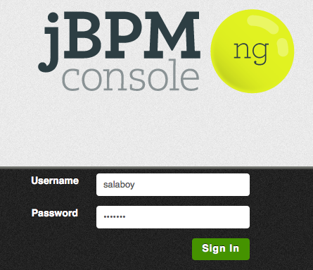
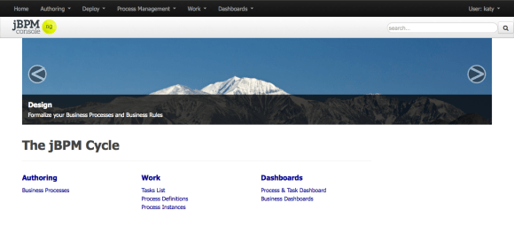
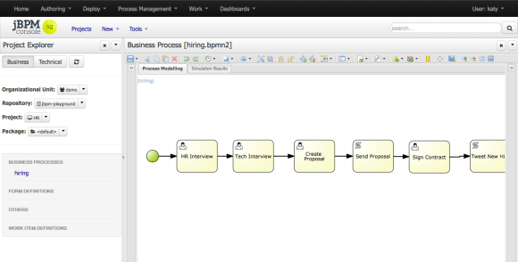
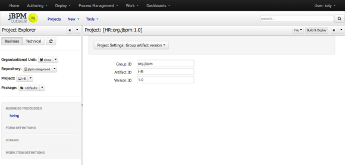
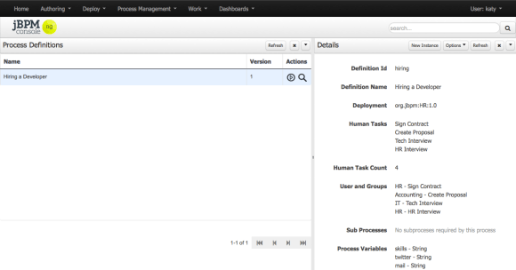
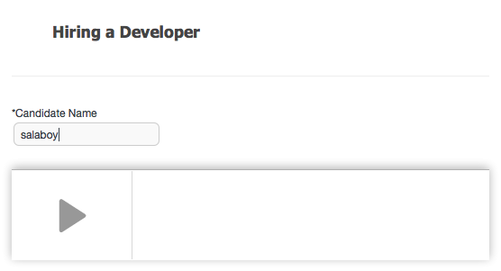
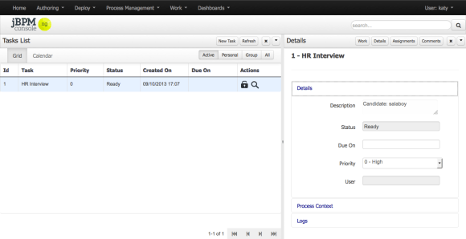
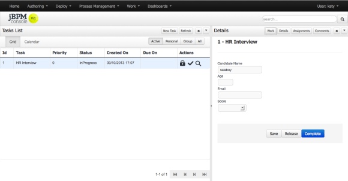
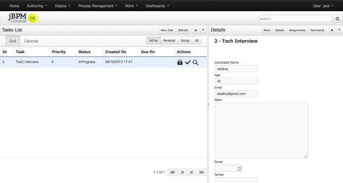
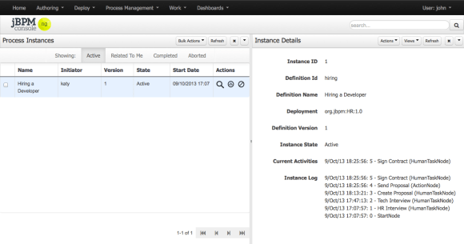

Using the jBPM Console NG – HR Example
The best way to learn about a new tool is using it, for that reason I’ve decided to write some posts about how to use the jBPM Console NG. On this we will be following a simple “Hiring Example” process. I will try to recreate step by step how to test this example, so you can play with it, change it and extend it if you want to. This example can also be used as a reference to test the application or give feedback about the data that is being shown in the jBPM Console Screens. We will be reviewing this example among others during the free workshops happening in London the 23rd and 24th of October.
The Example – Hiring Process V1
In order to show all the current features of the jBPM Console NG, I’ve wrote a very simple process to show in a 20 minutes walkthrough what you can do with the tool. Let me explain the business scenario first in order to understand what you should expect from the jBPM Console NG.

- Hire a new Developer (click to enlarge)

Let’s imagine for a second that you work for a Software company that works with several projects and from time to time the company wants to hire new developers. So, which employees, Departments and Systems are required to Hire a new Developer in your company? Trying to answering these questions will help you to define your business process. The previous figure, represents how does this process works for Acme Inc. We can clearly see that three Departments are involved: Human Resources, IT and Accounting teams are involved. Inside our company we have Katy from the Human Resources Team, Jack on the IT team and John from the Accounting team involved. Notice that there are other people inside each team, but we will be using Katy, Jack and John to demonstrate how to execute the business process.
Notice that there are 6 activities defined inside this business process, 4 of them are User Tasks, which means that will be handled by people. The other two are Service Tasks, which means an interaction with another system will be required.
The process diagram is self explanatory, but just in case and to avoid confusions this is what is supposed to happen for each instance of the process that is started a particular candidate:
- The Human Resources Team perform the initial interview to the candidate to see if he/she fits the profile that the company is looking for.
- The IT Department perform a technical interview to evaluate the candidate skills and experience
- Based on output of the Human Resources and IT teams, the accounting team create a Job Proposal which includes the yearly salary for the candidate. The proposal is created based on the output of both of the interviews (Human Resources and Technical).
- As soon as the proposal has being created it is automatically sent to the candidate via email
- If the candidate accept the proposal, a new meeting is created with someone from the Human Resource team to sign the contract
- If everything goes well, as soon as the process is notified that the candidate was hired, the system will automatically post a tweet about the new Hire using the twitter service connector
As you can see Jack, John and Katy will be performing the tasks for this example instance of the business process, but any person inside the company that have those Roles will be able to claim and interact with those tasks.
Required Configurations
In order to run the example, and any other process you will need to provide a set of configurations and artifacts, that for this example are provided out of the box. Just for you to know which are the custom configurations that this example require:
- Users and Roles Configuration: you will usually do this at the beginning, because it’s how you set up all persons that will be able to interact with your business processes.
- Specific Domain Service Connectors (WorkItemHandlers in the class path): this could be done on demand, when you need a new system connector you will add it
- A Business Process Model to run
- A set of Forms for the Human Tasks (If you don’t provide this the application will generate dynamic forms for them): this needs to be done for each User Task that you include in your process. This is extremely important because it represent the screen that the end user will see to perform the task. The better the form the better the user can perform its job.
For the users, roles and deployment instructions you need to check my previous post. The following steps require that you have the application deployed inside JBoss, Tomcat or that you are running the application in Hosted Mode (Development Mode).
The following steps can also be used to model and run a different business process if you want to.
The Example inside the jBPM Console NG
Initially we need to be logged in into the system in order to start working with the tools. There are no role based restrictions yet, but we are planning to add that soon.

- Login
Once you are inside the Home section gives you an overview of what are the tools provided in the current version.

- Home
The “Hiring a new Developer” process is being provided out of the box with the tool, so let’s take a look at it going to the Authoring -> Business Process section using the top level menu.
We will now be in the Authoring Perspective, where in the left hand side of the screen we will find the Project Explorer, which will allow us to see the content of the Knowledge Repositories that are configured to be used by the jBPM Console NG. The configuration of these repositories will be left out for another post. But it is important for you to know that you will be able to configure the jBPM Console NG to work against multiple repositories that contains business processes and business rules.

- Process Authoring
In the right hand side of the screen a you will see the Project Explorer where you can choose between different projects and between different knowledge asset types. In this case the HR project is selected, so you can check out the hiring process inside the Business Processes category.
You can try modeling your own process, by selecting New in the contextual menu and then Business Process.
Some of the things that you can look inside the process model are:
- Global Process properties: Click in the back of the canvas and then access to the properties menu. Notice the process id, the process name and the process version, and the process variables defined.
- User Task assignments: click into one of the User Tasks and look a the ActorId and GroupId properties (see previous screenshot)
- Tasks Data Mappings: take a look at the DataInputs, DataOutputs and Assignments properties. When we see each activity execution in the following section we will be making reference to the data mappings to see what information is expected to be used and to be generated by each task. (see previous screenshot)
Once we have our business process modelled, we need to save it and then Build & Deploy the project. We can do this by using the Project Editor screen. You need to select Tools in the contextual menu and then Project Editor.

- Project Editor
On the top right corner of the Project Editor you will find the Build & Deploy button. If you click on this button, the project will be built and if everything is OK it will be automatically deployed to the runtime environment, so you can start using the knowledge assets. If the deployment went right and you saw the Build Successfully notification you can now go to the Process Definitions screen under Process Management in the main menu to see all the deployed definitions.

- Process Definitions
If you don’t see your process definition, you will need to go back to the Authoring perspective and see what is wrong with your project, because it wasn’t deployed.
Notice that from this screen you can access to see the process details clicking in the magnifying glass located in the process Actions column.You can also create a new process instance from this screen clicking in the Start button in the process definition list or the New Instance button in the Definition Details panel. Let’s analyze the process execution and the information that the process requires to be generated by the different users.
Hire a new Developer Process Instance
When we start a new Process Instance a pop will be presented with the process initial form. This initial form allows us to enter some information that is required by the process in order to start. For this example the process require only the candidate name to start, so the popup just ask us enter the candidate name in order to start.

- New Process Instance
If we hit the big Start button, the new process instance will be created and the first task of the process will be create for the Human Resources Team. Depending on the assigned roles of the user that you are using to create the process instance you will be able to see the created task or not. In order to see the first task of the process we will need to logout tot he application and log in as someone from the Human Resources team.
Human Resources Interview
For this example we are already logged as Katy, who belongs to the HR team, so if we go to Work -> Tasks we will see Katy’s pending tasks. Notice that this HR Interview Task is a group task, which means that Katy will need to claim the task in order to start working on it.

- Katy’s Tasks
If Katy claim this task, she will be able to release it if she cannot work any more on it. In order to claim the task you can click in the lock icon in the Task List or you can click in the Work section of the Task Details to see the task form which also offer the tasks operations.
She can also set up the Due Date for the task to match that with the Interview Meeting date. When the candidate assist to the Interview, Katy will need to produce some information such as:
- The candidate age
- The candidate email
- The score for the interview
In order to produce that information, she will need to access the Task Form, which can be accessed by clicking in the task row check icon or in the clicking on the Work in the Task Details panel.

- Human Resources Interview
Another important thing to notice here is that the task operations of save, release and complete the task will be logged and used to track down how the work is being performed. For example, how much time takes in average a Human Resources interview.
Notice that Katy requires to score the candidate at the end of the interview.
Technical Interview
After completing the Human Resources Interview, the candidate will require to do a Technical Interview to evaluate his/her technical skills. In this case a member of the IT team will be required to perform the Interview. Notice that the technical interview task for the IT team will be automatically created by the process instance, as soon as the HR interview task is finished. Also notice that you will need to logout the user Katy from the application and login as Jack or any other member of the IT team to be able to claim the Technical Interview task.
The Technical interview will require the following information to be provided:
- The list of validated skills of the candidate
- The twitter account
- The score for the interview
As you can see in the following screenshot, some of the information collected in the HR Interview is used in the Tech Interview Task Form, to provide context to the interviewer.

- Jack’s Tasks
Once the Technical interview is completed the next task in the process will be created, and now it will be the turn of the Accounting team to work on Creating a Job Proposal and an Offer for the candidate if the interviews scores are OK.
You can log out as Jack and login as John in order to complete that task.
Process Instance Details
At all times you can go to the Process Management -> Process Instances to see the state of each of the process instances that you are running.
As you can see in the following screenshot you will have updated information about your process executions:

- Instance Details
The Instance Log section gives you detailed information about when the process was created, when each specific task was created and which is activity is being executed right now. You can also inspect the Process Variables going to the View -> Process Variables option.
As you may notice, in this screen you will be also able to signal an event to the process if its needed and abort the process instance if for some reason is not longer needed.
Summing Up
On this post we had quickly reviewed the screens that you will use most frequently inside the application. The main objective of these post is to help you to get used to the tools, so feel free to ask any question about it. In my next post I will be describing the configuration required to set up users/roles/groups and also we will extend the example to use Domain Specific Connectors for the Send Proposal and Tweet New Hire tasks that are being emulated now with a simple text output to the console.
Remember if you are London, don’t miss the opportunity to meet some community members here: http://salaboy.com/2013/10/04/drools-and-jbpm-6-workshops-2324-october-london/

{kind=link}
{kind=link}
{kind=link}
{kind=link}
{kind=link}
{kind=link}
{kind=link}
{kind=link}
{kind=link}
{kind=link}
{kind=link}